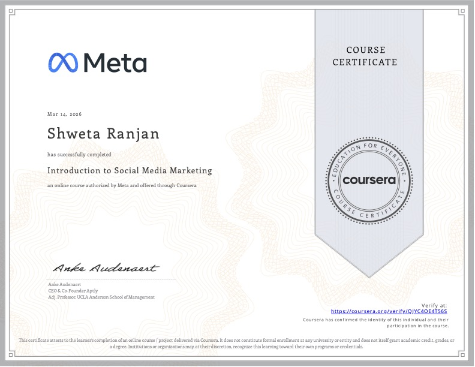

4+
Years of Experience
Content Strategist · Social Media Systems · Brand Architect
I don't just post content, I build systems that scale brands. Four years of growing communities from scratch, writing copy that converts, managing reputation across six platforms, and showing up on camera when it matters.
4+
Years of Experience
7.7M+
Content Views in a Single Month
230 → 6.1K
Instagram Followers Scaled
7%
Peak Push Notification CTR

Profile
I started as a writer, crafting copy for EdTech platforms, railway services, and education companies before I had a formal job title. That foundation taught me something most strategists skip: words are infrastructure.
Over four years, that evolved. At Adda247 and CareerPower, I scaled push notification CTR from 0.7% to a 7% peak across multi-crore exam verticals with every campaign tracked inside MoEngage. At Vedam School of Technology, I built the entire social and content operation from zero: strategy, calendars, scripts, ORM, lead attribution, and a 12-month YouTube roadmap across six platforms simultaneously.
I write copy. I build systems. I manage reputation. And when the camera comes out, I show up there too.
281
Attributed Leads Tracked
66%
LinkedIn Lead-to-Payment Peak
6
Platforms Managed Simultaneously
Expertise
Four capability pillars — each backed by real outcomes
Multi-platform strategy across Instagram, YouTube, LinkedIn, Telegram, Quora, Reddit, and X. Content bucket architecture, competitor benchmarking, UGC pipelines, and full-funnel calendar management.
6 platforms · 1.1M+ reach · 26× community growth
Push notifications, CRM campaigns, WhatsApp broadcasts, and email sequences. Every word has a job.
0.7% → 7% CTR · 2× revenue uplift
Quora Space management, Reddit community moderation, and GMB review pipelines. Controlling search.
#1 Google ranking · 50+ reviews
Master calendars, WOW trackers, and distribution matrices — the invisible infrastructure that makes a social operation run at scale without chaos.
7 operational systems built · Full attribution tracking
Case Studies
Click a card to explore the full case study — architecture, platform-by-platform execution, and measurable outcomes.
Chief Marketing Officer & Co-Founder
Co-founded a B2B transformation company from zero — leading all growth, marketing, brand positioning, and team operations across 8 platforms simultaneously.
Associate Manager, Blue Dot Transform Consulting
Managing end-to-end social media, content strategy, graphic design, script writing, and video direction for one of India's leading transformational coaches.
Social Media Senior Associate
Built the entire social and content function from a zero baseline — generating 1.1M+ Instagram reach, 7.7M views in a single month, and 281 attributed leads across 5 campaign cycles.
Marketing Copywriter
Scaled push notification CTR from 0.7% to a 7% peak across SSC, Railways, Banking, and UPSC verticals — with every campaign tracked inside MoEngage.
Writing Portfolio
Direct copywriting and editorial ownership across 4+ industries — providing the narrative backbone for websites, SEO campaigns, and performance lifecycles.
Operational Systems
The infrastructure behind the content. Seven interconnected systems built to make social media operations run at scale — without chaos.
B2B authority-building and demand generation system.
Attention capture and audience expansion system.
Authority, depth, and evergreen growth engine.
Perception control and trust infrastructure.
Execution backbone and operational control system.
Content multiplication and cross-platform scaling system.
Decision intelligence and optimisation layer.
On-Camera Work
Scripted, directed, and fronted — from student vox pops to VVIP industry interviews.
Job Pathway
From first byline to full-channel ownership — a chronological pathway showing role evolution, parallel freelance phases, and increasing ownership across content, systems, and performance functions.
Education
Academic foundation behind the strategy — a grounding in agricultural sciences paired with ongoing postgraduate management education, combining analytical rigour with business acumen.
Management & Strategy
2025 – 2027
Deepening understanding of business strategy, marketing management, and organisational communication — directly applied to content and social media leadership roles.
Horticulture
2017 – 2021
Undergraduate programme with a focus on horticultural science, research methodology, and data interpretation — building the analytical and process-thinking foundation that underpins her content and strategy work.
Certifications
Verified professional credentials from Meta — authorised through Coursera.

Contact
Open to brand mandates, content strategy projects, and consulting engagements.
Best aligned with teams hiring for communication ownership across strategy, execution, and reporting. Equally open to focused consulting projects.